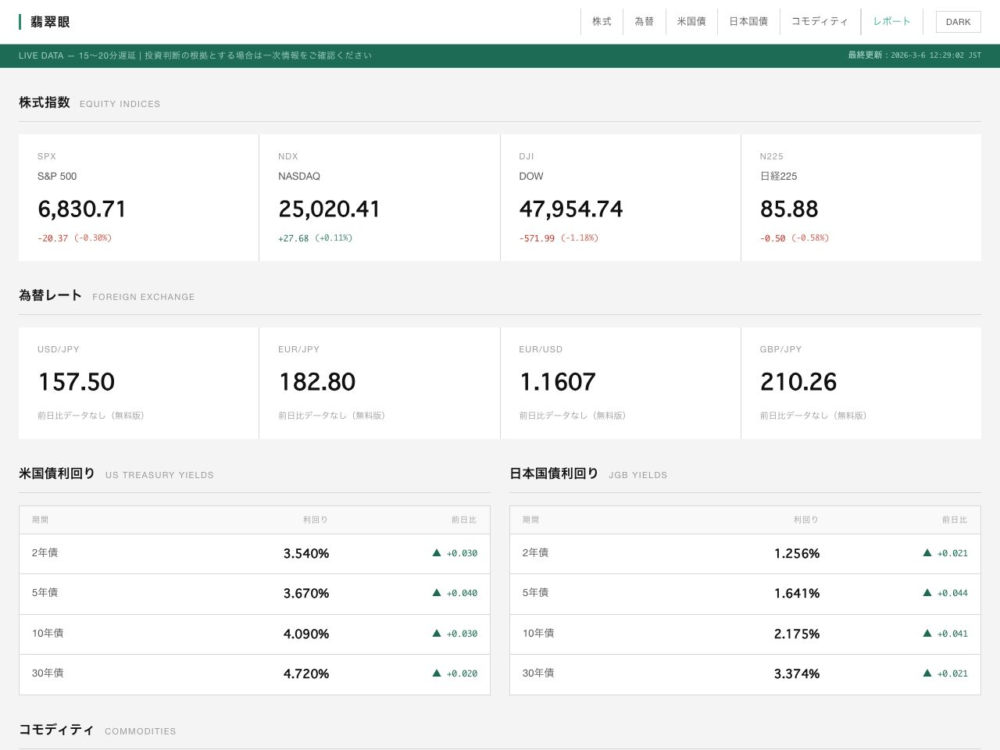
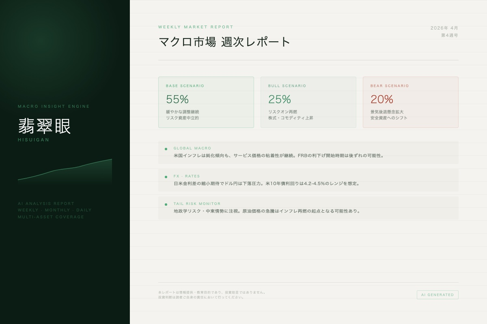
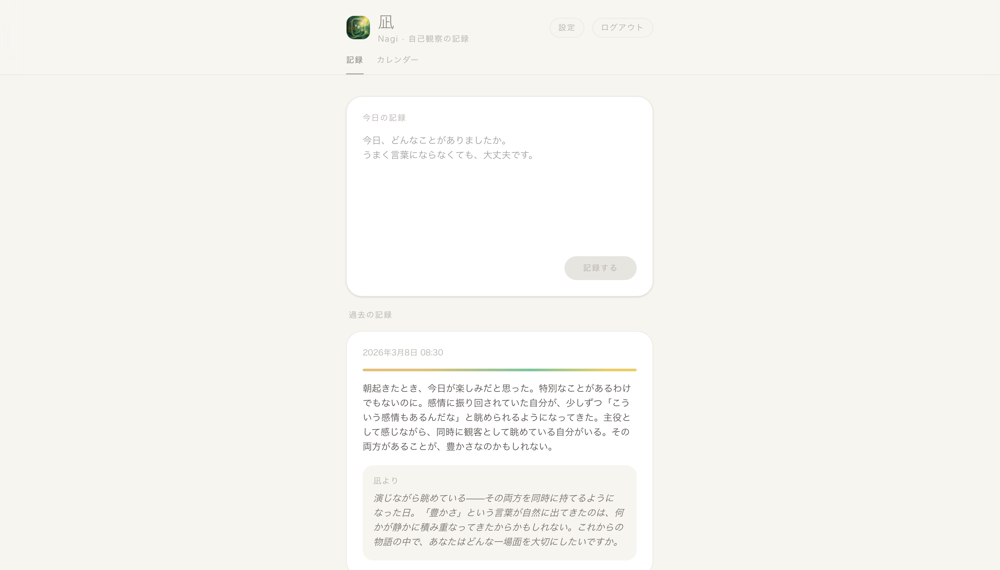
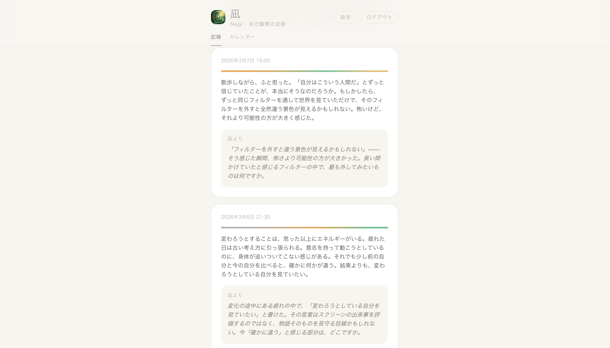
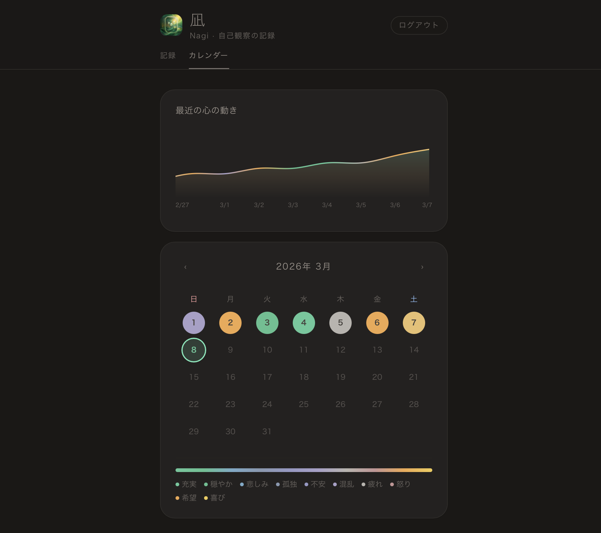

Builder
Web開発・自動化フロー・ツール開発と、非日常体験イベントの企画主催。
生活を豊かにするアイデアを形にしています。
指針
現世とは心を高めるために与えられた期間であり、魂を磨くための修養の場である。人間の生きる意味と価値は、その錬磨にある。
楽しみは、探索・エンタメ鑑賞・新技術のキャッチアップ。


世界市場を、見通す目。
為替・株式指数・債券・コモディティを一画面に集約したマクロ市場情報サイト。USD/JPY・EUR・GBP・S&P500・NASDAQ100・日経連動ETF・各年限利回り・WTI原油・金・銀・銅を15〜20分遅延でリアルタイム表示。AI（翡翠眼）による月次・週次・日次のマクロ分析レポートも掲載。



自己を観る。
多角的な視点（次元の上昇）を育むためのセルフジャーナリングアプリ。出来事をメリット・デメリットだけで捉えるのではなく、さらに多くの側面から見つめ直す——感情に振り回されずありのままを把握できる、その状態を目指す。AIキャラクター「凪」はアドバイスも評価もせず、ただ問いかけ、観察を促す。記録した感情は色として可視化され、カレンダーや心の動きグラフに静かに積み重なる。
音を、視る。
マイク入力から周波数・音量・音名をリアルタイム解析するオーディオツール。Three.js による3D周波数リング可視化とスペクトル表示を実装。ライト／ナイトモード切り替え対応。